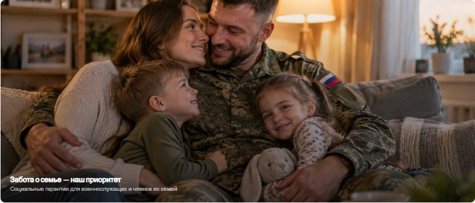

Высокий и стабильный доход
Стабильная ежемесячная выплата, размер которой зависит от должности и выслуги. Уточняйте у специалиста.
Стабильная работа, достойное вознаграждение и социальные гарантии. Выбери свою должность в тыловых войсках Вооружённых Сил.
Контрактная служба — это стабильность, социальные гарантии и забота о вашей семье

Стабильная ежемесячная выплата, размер которой зависит от должности и выслуги. Уточняйте у специалиста.
Подъёмные при заключении контракта. Актуальные суммы уточняйте при обращении.
Обеспечение служебным жильём или компенсация за наём. Военная ипотека для контрактников.
Бесплатное медобслуживание для военнослужащего и членов семьи в военных госпиталях.
Возможность получения образования за счёт Министерства обороны. Льготное поступление в вузы.
Ранний выход на пенсию, дополнительные социальные гарантии для военнослужащих и их семей.
* Точные суммы и условия уточняйте у специалиста при подаче заявки
Заполните форму или свяжитесь с представителем.
Уточните перечень необходимых документов и обследований.
Ознакомьтесь с условиями и обязательствами.

Управление военной и специальной техникой, доставка грузов и личного состава.
Подробнее →
Приготовление пищи для личного состава в полевых и стационарных условиях.
Подробнее →